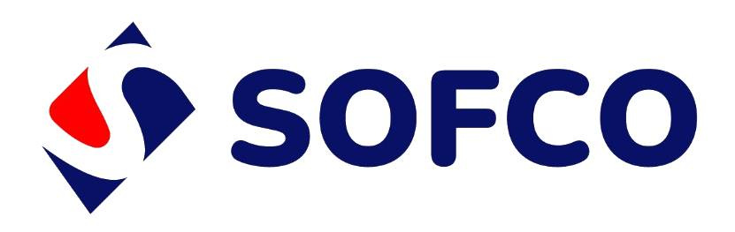
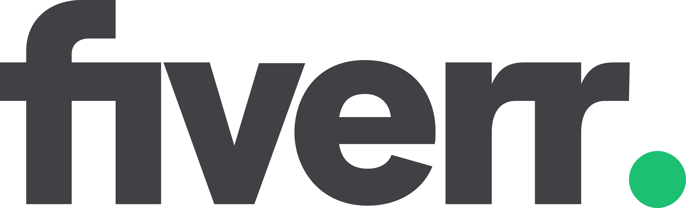

Muhammad Fiqri Febriansyah
Software Engineer & Aspiring Tech Entrepreneur
Bridging computer science engineering with business development to build systems that align with real business needs.
Explore My Career
Bridging computer science engineering with business development to build systems that align with real business needs.
Explore My CareerI am a Software Engineer with a background in Computer Science, currently pursuing a Master's in Entrepreneurship. While my experience is rooted in full-stack development, database management, and IT operations, my approach is focused on the bigger picture. For me, it is not just about writing clean code or chasing the latest tech—it is about bridging the gap between technical execution and business reality. I enjoy building practical, reliable systems that simply work and genuinely help businesses solve their day-to-day problems.




Leeds, United Kingdom

Jakarta, Indonesia